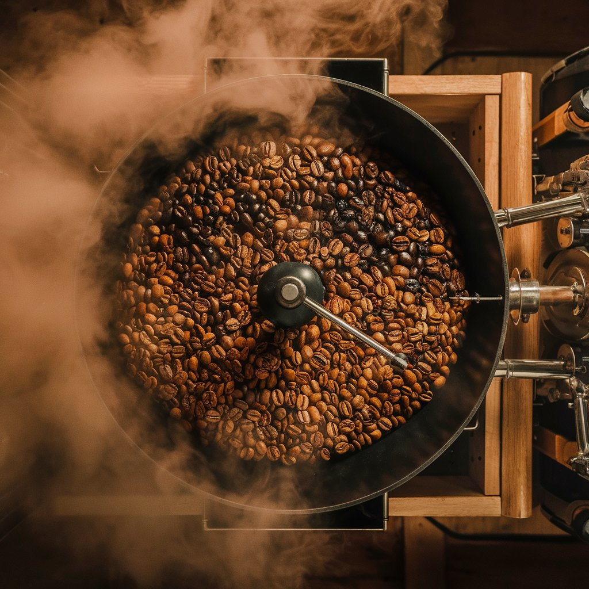
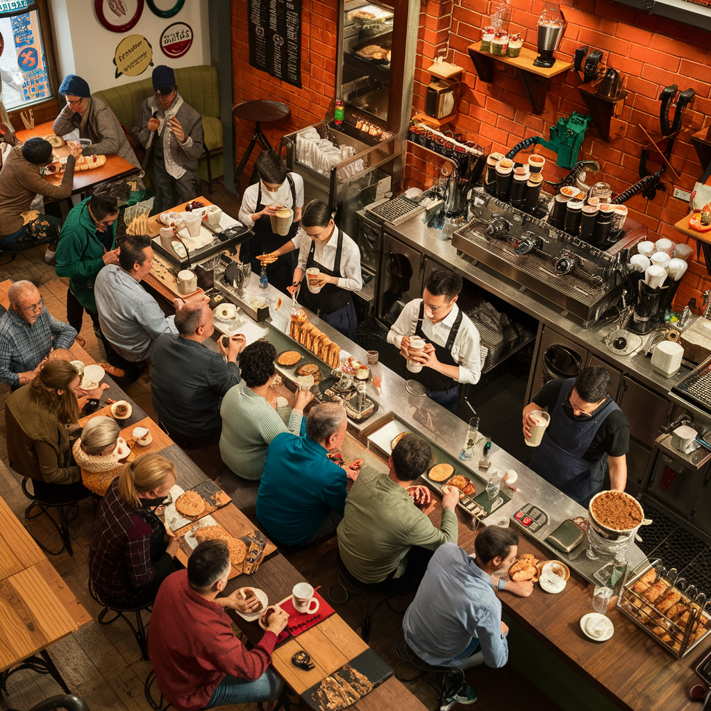

Our Story
Welcome to Azzara Great Coffee, where passion meets perfection. Our journey began with a simple love for coffee and a desire to create a space where people could gather, connect, and savor exceptional brews.
Founded in the heart of the city, our inspiration stemmed from the belief that coffee is more than just a beverage – it's a catalyst for community, creativity, and conversation.
At Azzara Great Coffee, our mission is clear: to deliver unparalleled quality, warmth, and authenticity in every cup. We strive to elevate the coffee experience, one sip at a time.
Our Craft
With a relentless commitment to excellence, we meticulously source the finest beans from around the world, ensuring each blend reflects the rich diversity of flavors and cultures.
Our skilled baristas, trained in the art and science of coffee, craft each cup with precision and passion, guaranteeing a consistently exceptional taste.
From our signature blends to our innovative brewing methods, every aspect of our craft is infused with an artisanal touch, resulting in a truly unforgettable coffee experience.

Our Community
At Azzara Great Coffee, community is at the heart of everything we do. We host regular events, support local charities, and collaborate with neighboring businesses to foster a sense of belonging and connection.
We believe that the key to a great coffee shop lies not only in the quality of its beans but also in the warmth of its welcome. That's why we go above and beyond to ensure every visitor feels valued, heard, and appreciated.
Your feedback is invaluable to us. Whether it's a compliment, a suggestion, or a question, we welcome it all with open arm. Together, we can continue to grow, learn, and thrive.
Our Future
As we look ahead, we're excited to embark on new adventures and expand our horizons. From opening new locations to introducing sustainable practices, the future is brimming with possibilities.
Our commitment to the environment is unwavering. We're dedicated to reducing our carbon footprint, minimizing waste, and supporting eco-friendly initiatives that benefit both the planet and our community.
Ultimately, our vision for the future is simple: to continue enriching the lives of our customers, one cup of coffee at a time. Together, we can create a brighter, more flavorful world.
